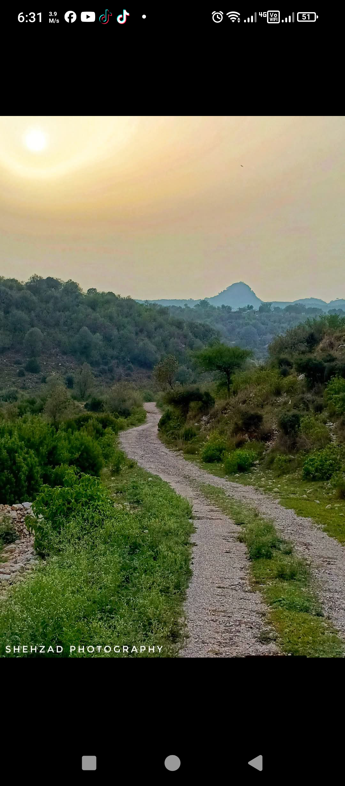

Kanpati in Soon Valley, Khushab District of Punjab, Pakistan, is a small and naturally beautiful local area surrounded by hills, greenery, and peaceful rural landscapes. It is not a major tourist city but a quiet picnic point known by local people. The area offers fresh air, scenic mountain views, and a calm environment away from busy urban life. Visitors often come here for relaxation, photography, and family outings. Soon Valley itself is famous for its lakes like Khabeki, Uchhali, and Jhalar, and Kanpati is located in or near this scenic region. The natural beauty, simple village lifestyle, and peaceful atmosphere make it attractive for nature lovers who want to enjoy silence and greenery. It is a hidden gem of the Soon Valley region.

mai Wali Dheri is a small and peaceful rural area located in the Punjab region of Pakistan. It is known for its simple village life, natural surroundings, and friendly community. The area is mostly surrounded by agricultural fields, green land, and open skies, making it a calm place away from the noise of big cities. People in Wali Dheri mainly depend on farming and livestock for their daily livelihood. Life here is traditional and closely connected to nature. The environment is clean and quiet, which makes it suitable for those who love rural beauty and simplicity. Although it is not a famous tourist destination, it represents the real charm of village life in Punjab. Visitors can experience fresh air, natural views, and cultural hospitality in this area.